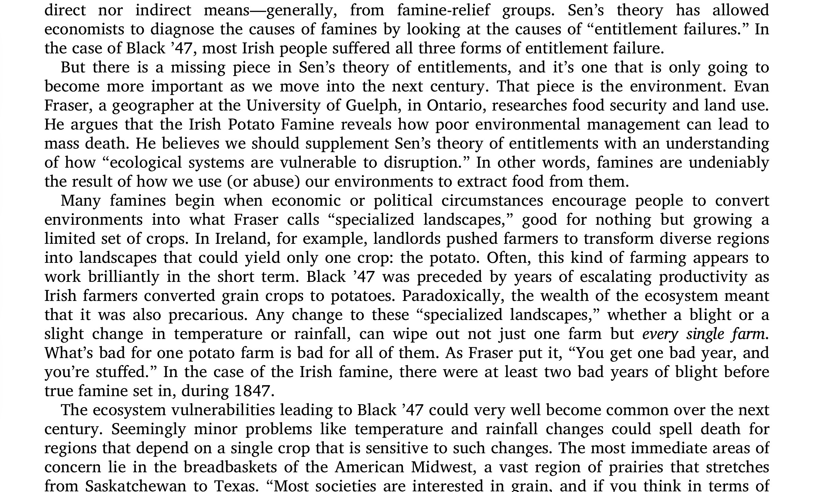
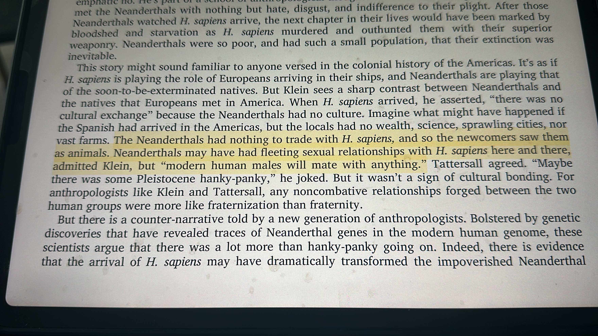
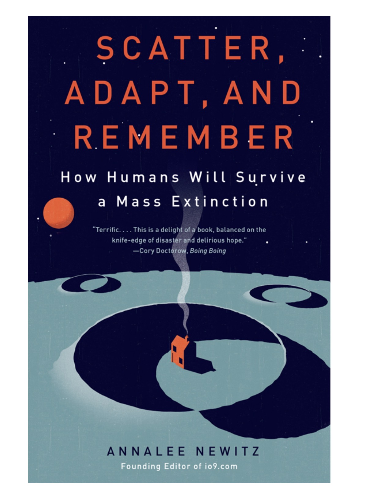
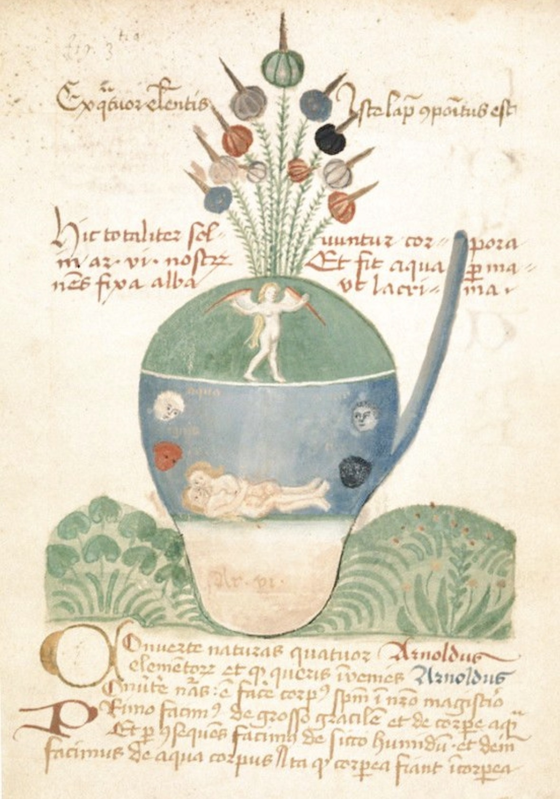

Currently Reading
Books that make me underline faster than I can think.
The kind that alter how I see things and make me want to write immediately after.
Touring July 5–7. Thoughtful inquiries are welcome in advance. Please allow time for a proper introduction before the dates approach.
Begin InquiryJournal
A scrapbook of books, passages, images, marginalia, and the thoughts I keep returning to.
Less blog, more archive. Less update, more evidence.
 my writing era
my writing era

Currently Reading
The kind that alter how I see things and make me want to write immediately after.
Saved Line
Utopian speculations must come back into fashion.
The kinds of sentences I want near me.

Reading Life
History, philosophy, collapse, survival, ritual, beauty, language, old symbols, and passages sharp enough to keep.


Things I’m Drawn To

Books, notes, fragments, symbols, and the sorts of things that leave a mark.